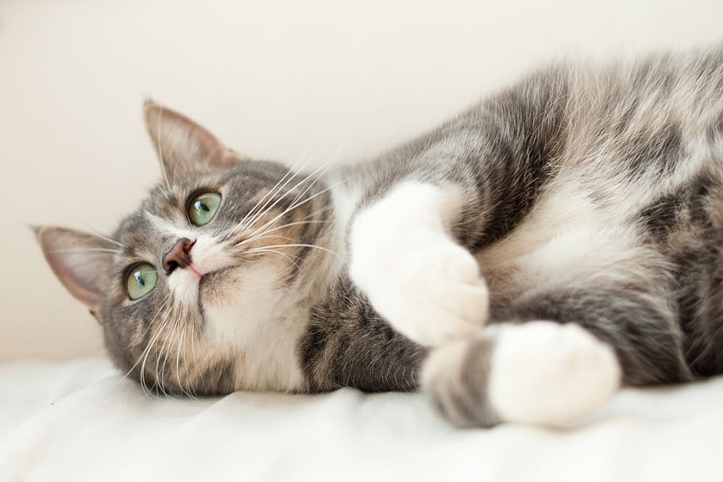
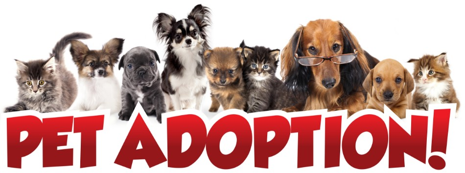

Get to Know More
About Us
Welcome to our adoption and rescue community, where compassion fuels transformation. Our mission began with a profound commitment to elevate the lives of animals in need. Whether stray or from loving homes, we open our doors to those in need of fostering when circumstances change. Beyond adoptions that unite families, we offer temporary refuges, encouraging charitable initiatives and donations. Strays are specifically left unnoticed and sometimes face severe consequences that can also lead to death. Each contribution resonates, creating a ripple effect that profoundly impacts the lives of countless animals. We also carry out educational initiatives, awareness campaigns, and community outreach further enhance their impact, fostering a culture of empathy and responsible pet ownership. Our professional veterinary doctors are available 24X7 to aid the animals in medical distress during emergency cases. Your one phone call can save the life of an injured animal! It is the need of the hour to understand the gravity of the scenario. People are becoming more and more aware of boycotting the practice of buying and selling animals. Instead, the idea of adopting pets is becoming trendy. This is because of our work as one whole community and it won’t stop until we provide every four-legged soul with a better livelihood. Join us in this collective endeavor to nurture, protect, and advocate for our beloved companions, fostering a world where every paw finds its forever home.
Adoption
Here is your chance to become a paw-parent. Join in our cause of providing the helpless animals with a caring household and join a community where every connection transform lives. Our website is a haven of furry companions waiting to be embraced into loving families. With a seamless process, we connect compassionate adopters with loyal companions ensuring every adoption is a harmonious blend of love, warmth, and lifelong devotion.
Volunteering
Even a pinch of goodwill is enough to join in this social cause. One has no reason to feel ineffective if they cannot help our furry friends by adopting them due to any personal reasons. You can make your contributions by volunteering for the fostering and caretaker services at our rescue shelters by registering yourself on our platform. A 15-minute training tutorial will be given to the volunteer prior to the allocation of activities. Let's make sure no further tears fall from those hopeful eyes.
Donation
Through our donations section, even those unable to provide hands-on care can contribute to the betterment of animal lives. Your generosity fuels crucial aspects like veterinary care, nutrition, and improved living conditions, ensuring a positive and lasting change in the daily experiences of our beloved animals. Join us in making a difference, one donation at a time
Explore Our
Experience
Rs 10,000 worth of generous donations received, along with countless blessings
75 + community members actively engaged in volunteering for the cause.
10 Veterinary Doctors and 2 Hospital Organisations connected with the community.
200+ applications received for animal adoption
50+ animals provided with emergency veterinary services and medical care.
60+ abandoned pets rescued and provided new home.
100+ successful adoptions, connecting families with their perfect companions.
15 dogs sent to national association for service dog training.
10 foster care placements, offering temporary refuge and care to animals in need
Checkout our
Services

Adopt a Dog to help the cause

Adopt a Cat to help the cause

Register your pet for adoption

Volunteer Yourself to help the cause